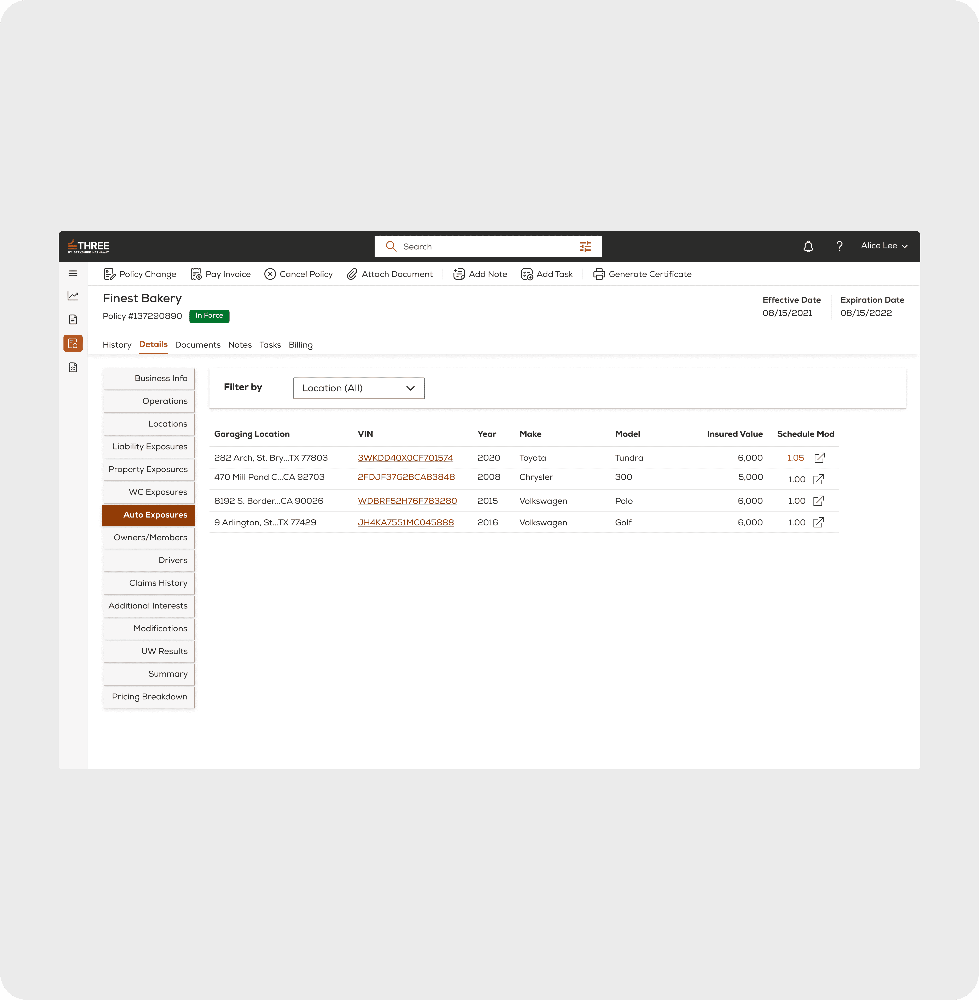
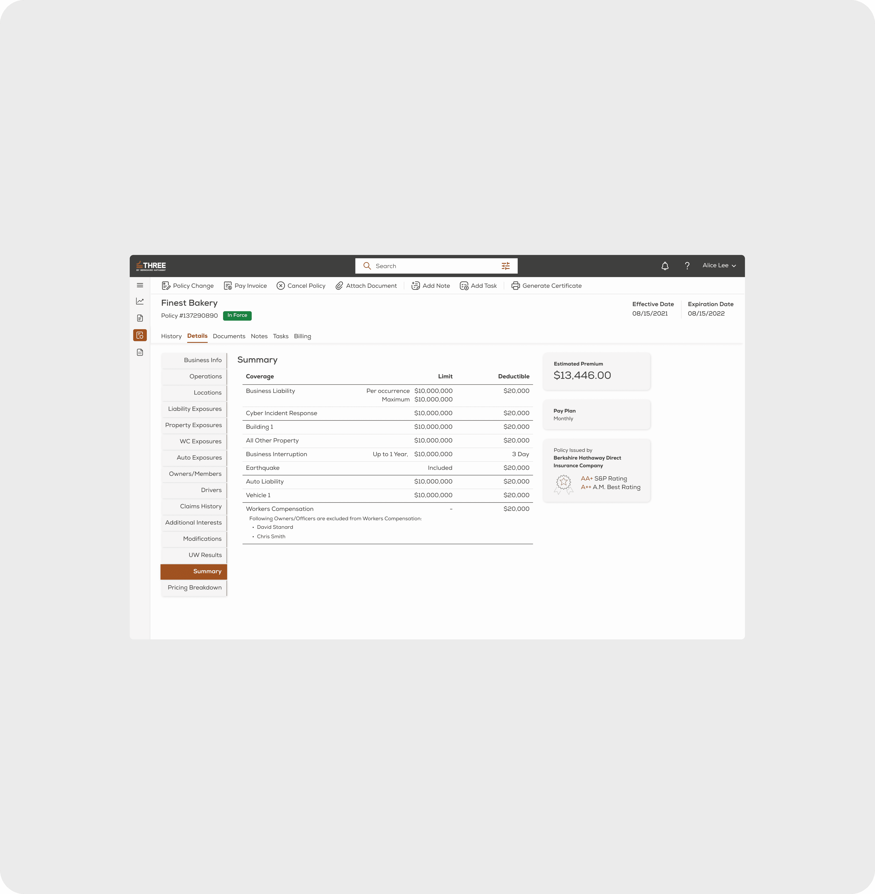

How a unified Material UI token architecture and multi-tenant broker portal streamlined commercial insurance rating across 80+ production screens for Berkshire Hathaway at Radity Zurich.
Three Insurance (a Berkshire Hathaway direct-to-business insurer) aimed to consolidate workers' comp, general liability, commercial property, and business auto coverage into a single comprehensive policy for American small businesses.
Operating at Radity GmbH (Zurich & New York), I served as Lead Product Designer responsible for architecting the broker portal, quote configuration engine, and policy issuance workflow across US and European engineering teams.
To support rapid engineering handoff across Zurich and US engineering squads, I constructed a tokenized Material UI component architecture.
“By standardizing input heights, density matrices, and table states in MUI theme providers, we eliminated custom frontend overrides across all 80+ broker and underwriting screens.”
The core engine was designed to power multiple insurance carriers from a single codebase. Through semantic token aliasing, the same component hierarchy dynamically adapted to:

The resulting multi-tenant engine reduced time-to-quote for commercial insurance agents from 48 hours to under 12 minutes, establishing a scalable foundation for Berkshire Hathaway's digital broker distribution.
